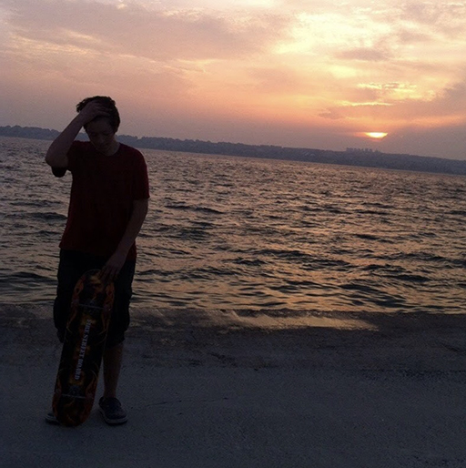
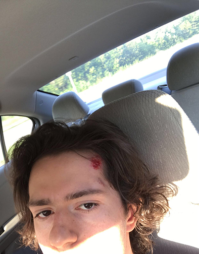

I started skateboarding when i was 14 and have not stopped since
Here is a picture of me with my first skateboard
I enjoy it because everytime i learn a new trick and pull it right after millions of tries it gives me a feeling of accomplishment
In a sense, it also reminds me of programming, it is frustrating and drives me crazy when i am doing it but when i see the results, oh boy!
however, it is part of the process ¯\_(ツ)_/¯
hmm it gotta be the classic, the ollie. it is the most basic trick yet you cannot do 90% of the other tricks without perfecting it!